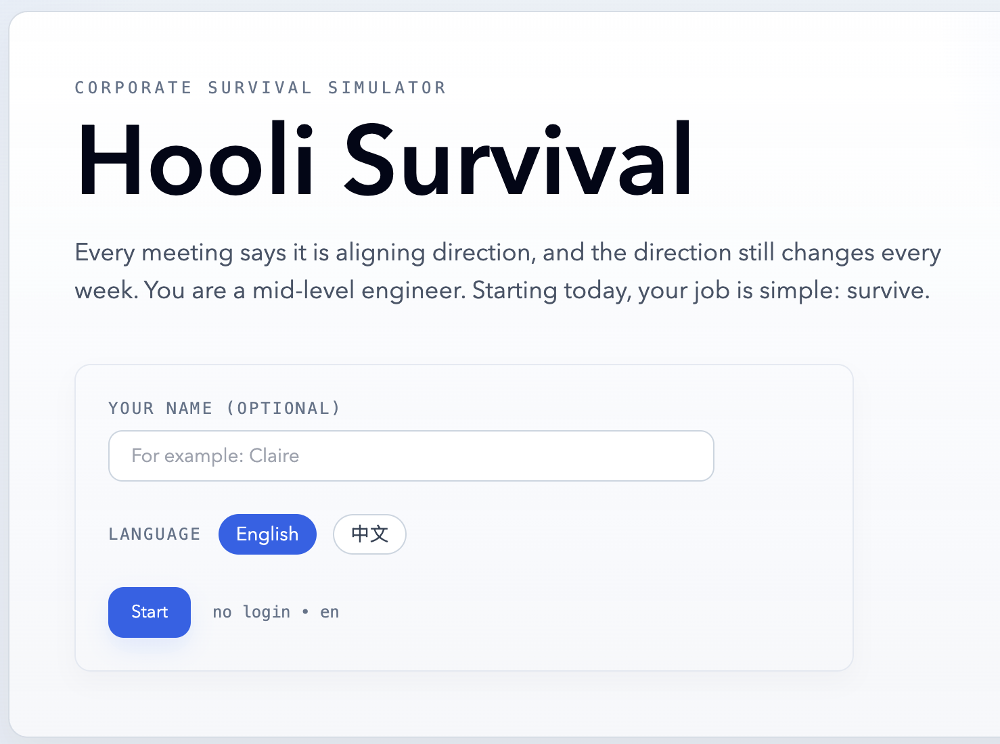
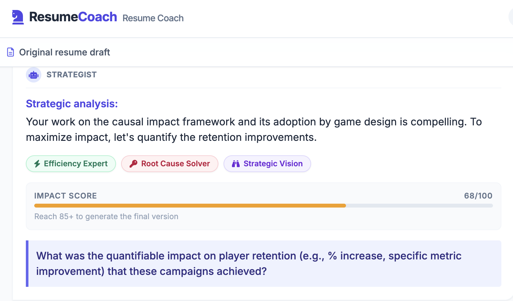

Photography
View all →


About
Data Engineer at AWS. I build AI systems, think about why they fail, and occasionally photograph streets at odd hours.
My work lives at the edge between technical depth and strategic clarity — the part where engineering decisions become product decisions.
Photography
View all →Work
View all →
